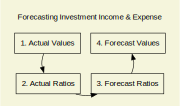

invest_iande_work
This sheet refers to Income and Expenses that relate to investments. There are two tables: the values and the ratios. The left part of the values table refers to actual values for several categories. These are converted to ratios in the left part of the second sheet, so that forecasts can be derived.

Each table consists of the same lines. The values in the 1st table represent income and expenses for each account. Those in the 2nd table hold the ratio to the start bal. These are computed in the case of actuals
The actual rates are extended into the forecast periods, by methods such as rolling average. The forecast rates are then multiplied by the forecast start balances to get the value for each of the income/expense types.
The following categories were devised to support forecasting investment income and taxes.
| Category | Supports |
|---|---|
| CapGn:Mut LT | Long term mutual fund distributions. For taxable accounts - supports tax calc |
| CapGn:Mut ST | Long term mutual fund distributions. For taxable accounts - supports tax calc |
| CapGn:Sales | Gains or losses from sales in taxable accounts |
| CapGn:Shelt:Distr | Mutual fund distributions of any duration in non-taxable accounts |
| CapGn:Shelt:Sales | Gains or losses from sales in non-taxable accounts |
| Div:Reg | Regular dividends in taxable accounts |
| Div:Shelt | Dividends in non-taxable accounts |
| Div:Tax-exempt * | Dividends exempt from federal tax in taxable accounts |
| Int:Reg | Interest in taxable accounts |
| Int:Shelt | Interest in non-taxable accounts |
| Int:Tax-exempt | Interest exempt from federal tax in taxable accounts |
* Tax exemption is in reality further broken down into federal and state. In theory it should be implemented on a per security basis. But it only matters for taxation so it is handled by custom lines on the taxes sheet by year.
The actuals derive from a Moneydance report: Investment IandE, which is a configured Transaction Filter that selects just the investment income and expense lines for all accounts. It should select dates over the years that are actuals. The result is saved into invest-iande.tsv.
The values are summarized by investment accounts for each of the categories. These become the numerators of the actual rates experience for each category for each account. The denominator is the opening balance of the account. Its imperfect for accounts where money is moved in or out during the year, but it is adequate for its use of setting default rates for forecast years.
The summarization is done on they Python side at load time. The ratios are calculated in the spreadsheet. Rates are rounded to 1 basis point (.01%). The rolling average of the previous periods is used to carry the rates into the forecast period. These averages may be modified by the rate cap set on the accounts tab.
On the balances table the Rlzd Int/Gn and Fees lines are derived as sums from this table.
On the iande table the forecasts for investment income and expense are also summed up from the values in this table. Forecasts for these lines are calculated as the sum across all accounts for the line for forecast periods. For actual periods those values will derive directly from the Moneydance income and expense report.